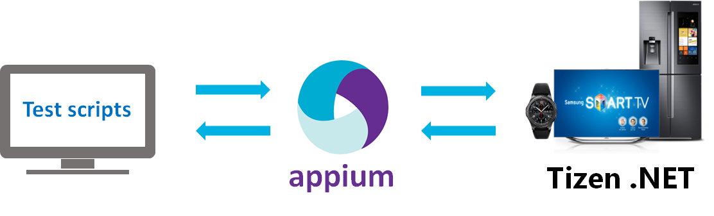
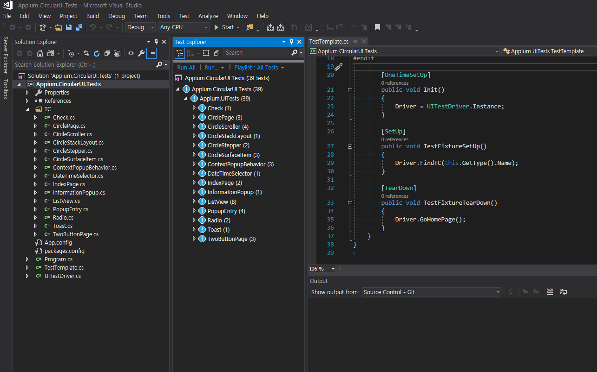

Creating UI automation test for Tizen .NET Application
This guide shows how to create and run a UI automation test using Appium and NUnit for Tizen .NET Application.
Appium is an open source project supporting cross-platform test automation tool. You can find many guide and information.
In This guide, Test Application uses WearableUIGallery which contains many TCs to check CircularUI API behavior.
Appium Client has a test script for UI automation. This guide uses the Appium.CircularUI.Test.
Please refer to the following image

There are 4 step for building UI automation
Prerequisite
Installing Appium server
appium guide : https://github.com/appium/appium/blob/master/docs/en/contributing-to-appium/appium-from-source.md
appium git repository : https://github.com/appium/appium
setup and run appium server (e.g ubunt)
$ git clone https://github.com/appium/appium.git $ cd appium $ npm install appium-chromedriver --chromedriver_cdnurl=http://npm.taobao.org/mirrors/chromedriver $ npm install $ npm run build $ node .
Modifying Your Application
If your Application use CircularUI then download Tizen.Appium git. Otherwise, skips 2 ~ 3 steps and go to step 4 after adding Tizen.Appium NuGet in Your Application project.
In the
Tizen.Appium.csprojfile, addWATCHto theDefineConstantsvalue for being restored CircularUI NuGet.<PropertyGroup Condition="'$(Configuration)|$(Platform)'=='Debug|AnyCPU'"> <DefineConstants>TRACE;DEBUG;TIZEN4_0;WATCH</DefineConstants> </PropertyGroup> <ItemGroup Condition="$(DefineConstants.Contains(WATCH))"> <PackageReference Include="Tizen.Wearable.CircularUI" Version="1.0.0-pre2-00118" /> </ItemGroup>Add
Tizen.Appiumproject to your application solution, and then add Tizen.Appium in a reference project in your application project.In the following Image,
Tizen.Appiumis added inTizen.Wearable.CircularUI.Test.Appiumsolution, and then add in a reference project inWearableUIGallery.Tizen.Wearableproject.
Add
Tizen.Appium.TizenAppium.StartServiceto main method andTizen.Appium.TizenAppium.StopServicetoOnTerminatemethods.protected override void OnTerminate() { base.OnTerminate(); #if UITest global::Tizen.Appium.TizenAppium.StopService(); #endif } static void Main(string[] args) { var app = new Program(); global::Xamarin.Forms.Platform.Tizen.Forms.Init(app); FormsCircularUI.Init(); #if UITest global::Tizen.Appium.TizenAppium.StartService(app); #endif app.Run(args); }Add
AutomationIdto theXamarin.Formscontrol for allowing to find and control the specified control during the automation test. Please refer to the following code.<w:CirclePage.Content> <w:CircleScrollView x:Name="myscroller" Orientation="Vertical"> <StackLayout Orientation="Vertical"> <Label HorizontalOptions="CenterAndExpand" Text="Default" /> <w:Check AutomationId="default" DisplayStyle="Default" HorizontalOptions="CenterAndExpand" IsToggled="False" Toggled="OnToggledDefault" /> <Label HorizontalOptions="CenterAndExpand" Text="Onoff" /> <w:Check AutomationId="onOff" DisplayStyle="Onoff" HorizontalOptions="CenterAndExpand" IsToggled="True" Toggled="OnToggledOnOff" />
Make Testscript
Install Nunit Test Adapter in visual studio : Visual Studio Tools > Extension and Update >

Create unit test project(.NET framework)
Visual Studio File > New > Project > Tap Test in Visual C# > Select Unit Test Project(.NET Framework)

Remove NuGet packages (e.g NunitTestAdapter, Xamarin.UITest ...) except Nunit, and then update Nunit NuGet package to v3.11.0.
Install following NuGet packages
- Appium.WebDriver (upper 4.0.0.4)
- Selenium.WebDriver
- Selenium.Support
- Newtonsoft.Json
- DotNetSeleniumExtras.PageObjects
Castle.Core

Remove auto-generated cs files(e.g AppInitializer.cs, Tests.cs), And then copy 3 files (
Program.cs, TestTemplate.cs, UITestDriver.cs) fromTizen.Wearable.CircularUI\test\Appium.CircularUI.Tests\to your project.Set configuration. Please refer to
InitTizen()intest\Appium.CircularUI.Tests\UITestDriver.cs.You should set AppiumOptions
- Set
platformNametoTizen - Set
deviceNameto your testing device name. - Set
appPackageto your Application package name. - Set
appto your Application tpk name. Create
TizenDriverwith Uri(Your Appium server IP address). In the below Example192.168.0.49is Appium server IP. You should insert your device's IP which installed Appium server. 4723 is designated port number for Appium server.void InitTizen(string platform, string profile) { AppiumOptions option = new AppiumOptions(); option.AddAdditionalCapability("platformName", platform); option.AddAdditionalCapability("deviceName", "emulator-26111"); option.AddAdditionalCapability("appPackage", "org.tizen.example.WearableUIGallery.Tizen.Wearable"); option.AddAdditionalCapability("app", "org.tizen.example.WearableUIGallery.Tizen.Wearable-1.0.0.tpk"); _driver = new TizenDriver<AppiumWebElement>(new Uri("http://192.168.0.49:4723/wd/hub"), option); _touchScreen = new RemoteTouchScreen(_driver); }
- Set
If you want to add a common set of functions that are performed before or after each test, please make SetUp method and TearDown method.
In the following Appium.CircularUI.Tests code, SetUp and TearDown methods are called in TestTemplate Class. Each Test Class inherited the TestTemplate Class.
using NUnit.Framework; namespace Appium.UITests { public class TestTemplate { public UITestDriver Driver; [OneTimeSetUp] public void Init() { Driver = UITestDriver.Instance; } [SetUp] public void TestSetUp() { Driver.FindTC(this.GetType().Name); } [TearDown] public void TestCleanUp() { Driver.GoHomePage(); } } }Write test script with Nunit feature. please refer to Nunit documentation
using NUnit.Framework; namespace Appium.UITests { [TestFixture, Order(15)] public class Check : TestTemplate { [Test] public void CheckTest() { Driver.Click("default"); Driver.Click("onOff"); Driver.Click("small"); var isToggled = Driver.GetAttribute<bool>("default", "IsToggled"); Assert.True(isToggled, "Check(default).IsToggled should be true, but got " + isToggled); ... } }
Run Testscript
Launch your Tizen emulator or connect Tizen wearable device to PC which installed Appium server.
Run Appium Server.
Appium installed Path/appium (master)$ node . [Appium] Welcome to Appium v1.9.2-beta.2 (REV a95edb162350a359d6cc45b7aa89a3843b19f0ee) [Appium] Appium REST http interface listener started on 0.0.0.0:4723Launch
Test ExplorerWindow In Visual Studio 2017. Top menu bar > Test > Windows > Test Explorer
Click
Run Allin Test Explorer window.You can run the selected test clicking the
Run Selected Testmenu with a mouse right click on a test case.